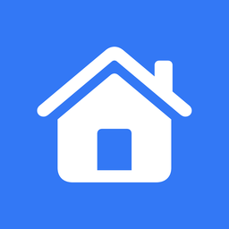

잠금만 풀면 출근이 찍히고,
언제 집에 갈 수 있는지 알려줍니다.
잠금을 풀거나 절전에서 깨어나면 그 시각을 출근으로 기록합니다. 오전 8시~오후 3시 사이 첫 신호에만 적용되고, 그날 기록이 이미 있으면 건너뜁니다. 시각이 틀리면 직접 고칠 수 있습니다.
출근 + 9시간. 반차는 4시간 근무에 12~13시 점심을 제외하고 계산합니다.
체크박스로 켜고 끕니다. 출근이 오후 1시~3시 사이에 기록되면 자동으로 켜집니다.
10분 전과 정각에 알림이 옵니다. 아이콘은 퇴근 30분 전부터 주황에서 빨강으로 바뀝니다.
최근 10일치. 날짜별 출퇴근 시각과 근무 시간을 보여주고, 9시간을 넘긴 날은 빨갛게 표시합니다.
로그인할 때 자동으로 시작합니다. 잠금 해제를 감지하려면 켜두어야 합니다.
gohome.zip 의 압축을 풉니다.install.command 를 더블클릭합니다.install.command 를 실행합니다.GoHome.exe 를 계속 둘 폴더로 옮깁니다. 나중에 옮기면 자동 실행이 풀립니다.| 필요 버전 | macOS 14 이상 / Windows 10 이상 (64비트) |
| 기록 | 이 컴퓨터 안에만 저장됩니다. 어디로도 전송되지 않습니다. |
| 상주 | 잠금 해제를 감지해야 하므로 설정에서 자동 실행을 켜두는 편이 낫습니다. |
| 기준 시각 | 한국 시간(KST) 고정 |
맥은 build_and_package.sh, 윈도우는 windows/build.bat 하나면 됩니다. 윈도우 쪽 구조와 맥 버전과의 차이는 windows/README.md에 정리해 뒀습니다.